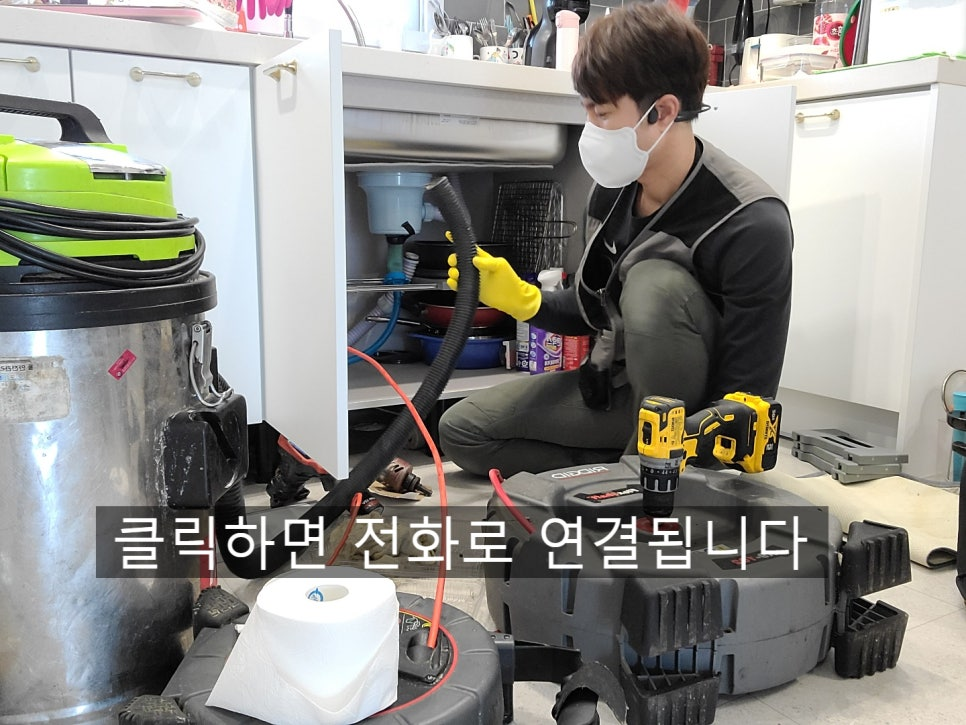
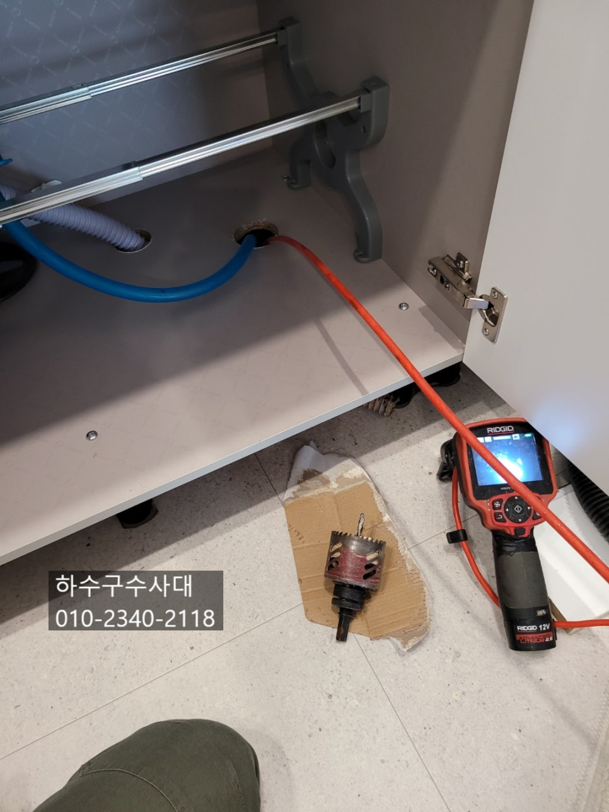
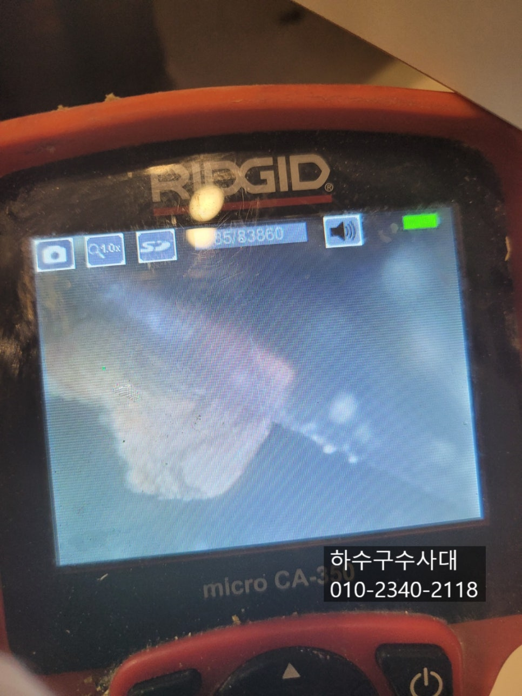
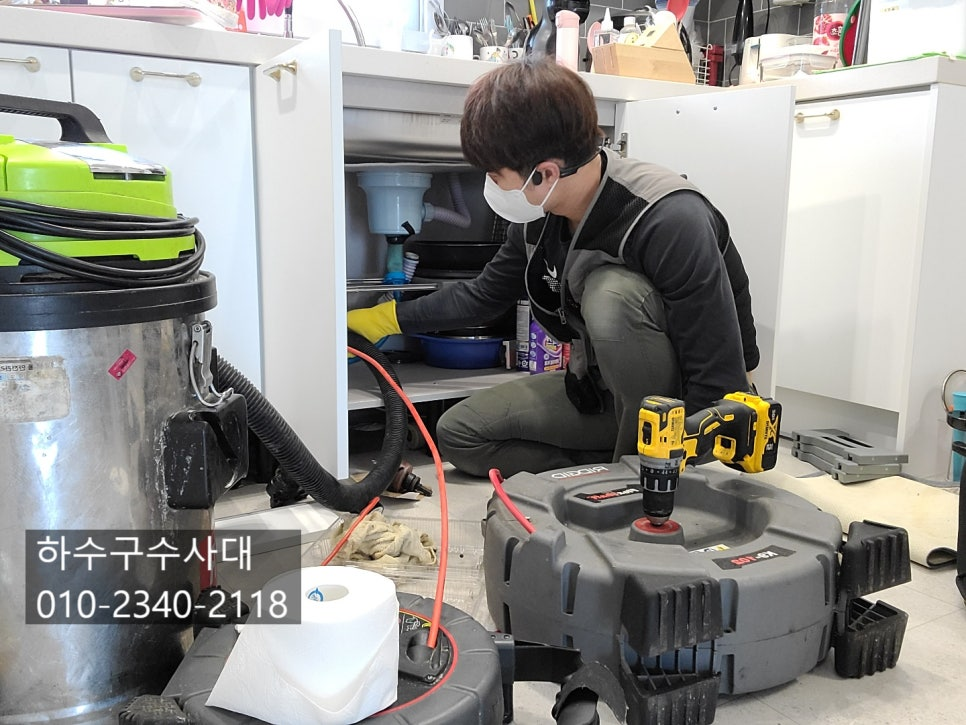
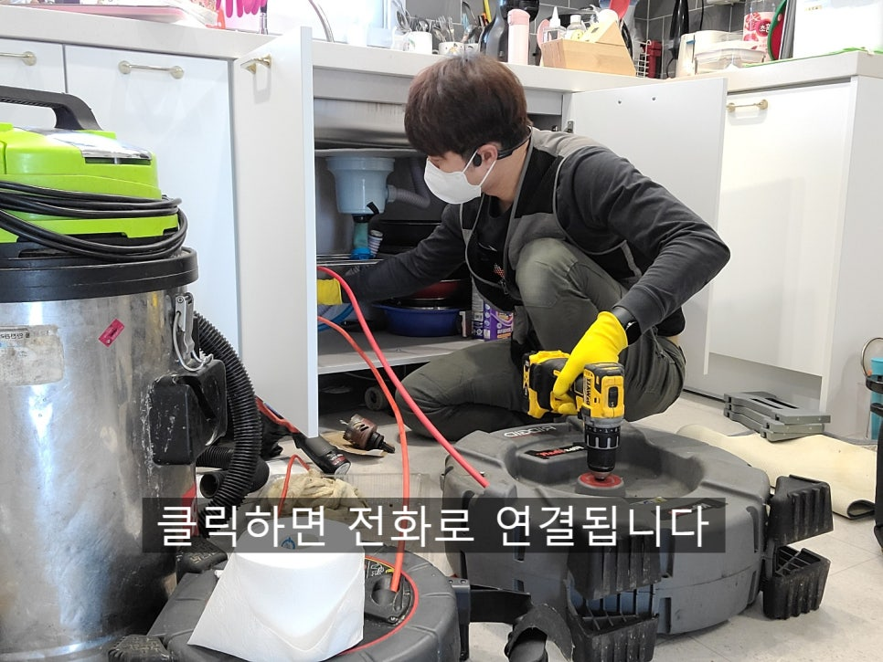

🏠 수지구하수구막힘 싱크대하수구 막힘의 원인
용인 싱크대막힘 전문 시공 후기

📋 작업 개요
- 위치: 용인
- 서비스 유형: 싱크대막힘, 하수구막힘, 배관막힘, 역류해결, 뚫는업체, 배관청소
- 작업 일시: 2022. 3. 1. 23:50
- 업체명: 하수구수사대 (010-5615-2118)
🔍 문제 상황
수지구하수구막힘 싱크대하수구 막힘의 원인
안녕하세요
"하수구수사대" 인사드립니다
오늘은 싱크대하수구에서 역류를 하여
며칠동안 싱크대사용을 못하고 계신곳을 다녀왔어요.
하수구에서 막힌것 같아 펑크린도 부어보았지만
크게 소용은 없다고 하셨답니다.
하수구에서 물이 새어나오다 보니 어떻게든 막아보려고
고무장갑과 비닐로 꽁꽁 막아놨지만 물이 내려가지않고 조금씩
계속 새어나왔답니다.
하수구가막히면 우선적으로 펑크린 또는 뚜러펑을 마트에서
구매하여 부어주면 효과를 볼수도 있습니다. 하수구배관속은
어떻게 되어있는지 보이지 않기 때문에 여러가지 방법을
시도해 보는것도 좋은 방법입니다.

🔎 원인 분석
💡 전문가 진단: 정밀 진단 장비를 사용하여 슬러지의 고착 여부를 판명하고 타격/세척 작업을 실시했습니다.
세정제를 부어보거나 또는 뚫는 장비를 구매하여 넣어보는것도
효과를 볼수 있답니다. 하지만 싱크대배관의 경우에 스프링을
구매할때는 최소한 3미터 이상이 되는장비로 구매하셔야합니다.
굵기도 새끼손가락 정도는 되야 효과를 볼수 있습니다.
전문적인 장비는 석션장비가 있는데요 배관속 이물질을
흡입하는 장비로 어느정도 뽑아낼수 있답니다.
내시경카메라도 전문가라면 필수적으로 갖춰야 할 장비입니다.
배관속에 어떻게 이물질로 막혀있는지 어떻게 해결해야하는지
중요한 역할을 합니다. 싱크대배관에는 대부분 기름슬러지가
쌓여있는경우가 많은데요 음식물을 지나가는 배관은 아무래도
오래 사용하다보면 기름슬러지가 배관에 서서히 붙으면서
기름이 덩어리가 된답니다.
이렇게 기름덩어리가 되기전에 예방을 하기위해선
설거지를 할때 물을 충분히 흘려보내고 한달에 한번쯤은
펑크린을 배관 관리차원에서 부어주면 좋아요.

🔧 작업 과정
요즘 2~3년 된 아파트에서도 막힘 현상이 일어나고 있는데요
식습관의 문제도 있겠지만 구조적인 문제도 있다고 보여집니다.
요즘 아파트 싱크대배관 구조를 보면 인테리어 효과를 위해
창가쪽보다는 거실 내부쪽에 싱크대가 위치하거나 일부러
리모델링을 할때 배관을 연장해 옮기는 경우도 있어요.
배관이 길다보면 기름기가 잘 흘러나가지 못하고 배관에
머물러 배관에 붙는 경우가 생겨납니다.
또한 배관이 길다보면 기울기가 좋지 않아 물이 고이는구간이
생기로 이곳이 집중적으로 기름이 쌓이는 구간이 됩니다.
하수구배관을 뚫을때는 몇가지 장비가 있습니다.
흔히들 알고있는 스프링장비는 뚫는 용으로 좋은데요
하지만 스프링을 뚫는 용으로는 좋지만 기름덩어리를 모두
제거하기에는 부적합한 장비입니다.
최적화된 장비는 플렉스 샤프트 장비가 있는데요 이장비는
뚫는 용도와 청소용도록 사용되고 있습니다.
배관의 기름을 모두 제거할수 있는 장비로 많이 사용되고 있습니다.
내시경카메라로 내부에 기름들을 보면서 제거할수
있어서 사용하는 입장에서도 100% 신뢰가 갑니다.
하수구를 제대로 뚫지 않으면 얼마가지않아
또 막히는 경우도 생기는데요
"하수구수사대"는 1년 AS 보증을 해드리고
있기 때문에 큰 걱정은 안하셔도 됩니다^^
작업 마무리는 물을 많이 받아서 내려보는 테스트를


✅ 작업 완료
해주게 되는데요 내시경카메라로 확인을 했지만
물을 많이 부어 호스쪽에서 물이 새어나오는지도
확인하기 위한 테스트입니다,
하수구수사대는 주말,공휴일에도 근무하고
있으니 하수구막혔을땐 언제든지 연락 바랍니다
경기도 용인시 수지구 풍덕천로129번길 9 5층 590호



⚠️ 주방 싱크대 배관 막힘 예방 수칙
- ✅ 기름기가 묻은 식기나 프라이팬은 설거지 전 키친타올로 반드시 기름때를 닦아내세요.
- ✅ 주기적으로 싱크대 개수대에 뜨거운 물을 가득 받아 한 번에 내려 배관 내부 기름을 씻어내세요.
- ✅ 배수구 거름망을 미세한 필터로 사용하시고 음식물 찌꺼기가 틈으로 새어 들지 않게 관리하세요.
- ✅ 베이킹소다와 식초를 뜨거운 물과 함께 일주일에 한 번씩 부어주면 배관 살균과 막힘 예방에 좋습니다.
💡 핵심 정리
- 확실한 장비 작업(내시경 점검 및 샤프트 스케일링)으로 원인을 뿌리 뽑습니다.
- 작업 후 1년 이내에 동일한 부위 재발 시 100% 무상 A/S 서비스를 보장합니다.
- 서울 · 경기 · 인천 전 지역에 24시간 언제든 긴급 출동할 수 있도록 항시 대기 중입니다.
❓ 자주 묻는 질문 (FAQ)
🚨 용인 싱크대막힘 문제로 고민이신가요?
정확한 원인 진단과 확실한 시공으로 재발 없는 해결을 약속드립니다.
24시간 긴급 출동 | 서울 · 경기 · 인천 전지역 | 1년 내 재발 시 무상 A/S